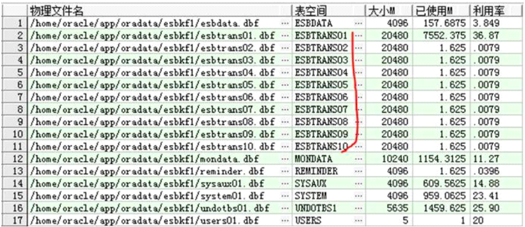
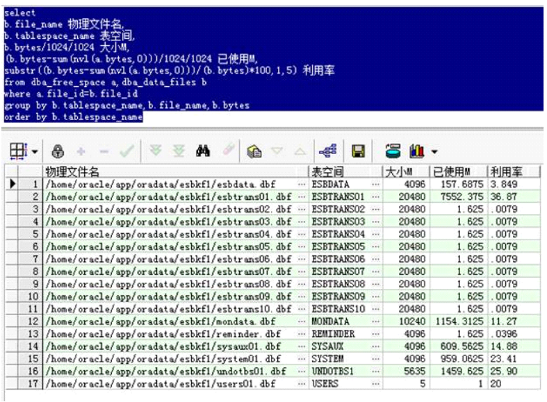
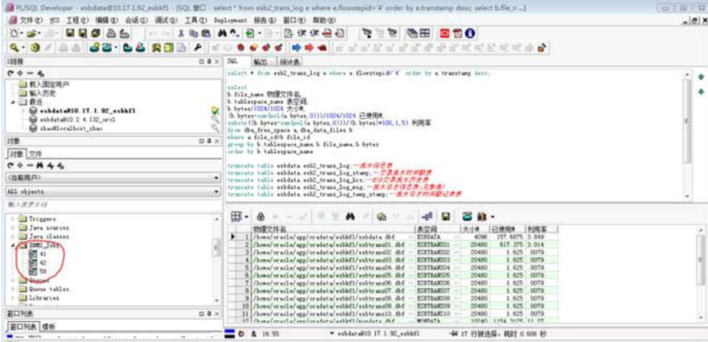
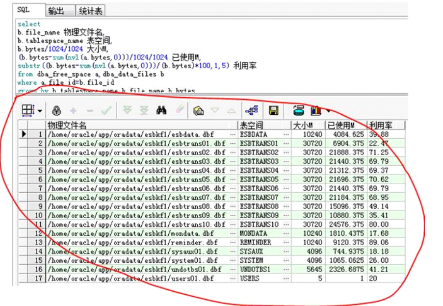

ESB相关表及表操作
1、表空间相关操作
1. 流水表空间10个轮番用来记录流水

2. 查看表空间使用情况
--查看流水表空间使用
select
b.file_name 物理文件名,
b.tablespace_name 表空间,
b.bytes/1024/1024 大小M, --注意M和汉字之间不要存在空格
(b.bytes-sum(nvl(a.bytes,0)))/1024/1024 已使用M,
substr((b.bytes-sum(nvl(a.bytes,0)))/(b.bytes)*100,1,5) 利用率
from dba_free_space a,dba_data_files b
where a.file_id=b.file_id
group by b.tablespace_name,b.file_name,b.bytes
order by b.tablespace_name
3. 结果如下：

4. 流水表空间切换原理
oracle在建库后即为ESB中的journal创建了10个表空间，主要用这10个表空间记录交易时产生的大量流水信息。
切换原理：Oracle不会智能地定时对表空间进行切换。Oracle还是通过执行存储过程或者SQL语句，人为的设定切换频率。
首先人为设定记录流水先从ESBTRAN01这个表空间开始记录，然后执行切换的SQL，比如说SQL设定每天的0点自动将表空间指向下一个，即ESBTRAN02表空间。
具体切换原理如下：

5. 查询表空间路径，修改表空间文件大小【使用sys系统用户】
一般记录流水的errorlog总会报数据库错误，这个原因是因为数据库中存储流水表的表空间大小设置的比较小了，流水已经记满了insert不进去了就会报错！
解决办法：
修改记录流水的十个表空间大小，统一改成6GB：
修改表空间文件1~10即'ESBTRANS01'到'ESBTRANS10'
先在表空间系统表dba_data_files中查询指定tablespace_name对应的表空间文件*.dbf
select * from dba_data_files where tablespace_name = 'ESBTRANS01';
通过下述语句修改数据文件的大小：
alter database datafile '/home/oracle/app/oradata/esbkf1/esbtrans01.dbf' resize 6144M;
6. ESB中所使用的所有表空间及每个表空间的含义
表空间总共有17个，其中有10个流水表空间

2、ESB相关表总结
select * from esbdata.baseservices;--基础服务参数表
select * from esbdata.bindmap;--服务协议绑定关系表
select * from esbdata.bindtypedefine;--协议类型定义表
select * from esbdata.bussservices;--业务服务参数表
select * from esbdata.clientlocation;--节点信息表设计
select * from esbdata.configurations;--基础节点参数表
select * from esbdata.dataadapter;--服务，渠道与适配器流程关联表
select * from esbdata.dataadapter_param;--数据适配流程参数表，用来insert一个新的适配流程
select * from esbdata.deployments;--服务组件部署信息表
select * from esbdata.deployunits;--UDDI部署单元表(无数据)
select * from esbdata.esb2_fault_prov;--故障维护配置表
select * from esbdata.esb2_client_secr;--客户端安全认证配置表(无数据)
select * from esbdata.esb2_flow_ctrl;--流控令牌配置表，就是
select * from esbdata.esb_sys_map;--流控服务系统与服务id配置表（就是Console页面配置令牌时需要映射的服务系统和服务id的那张表）
select * from esbdata.esb2_in_flow_ctrl;--本地流控配置表，一般不使用
select * from esb_flow_ctrl;--服务器流控配置表（就是console页面令牌配置时操作的
select * from esb_flow_ctrl;--服务器流控配置表（就是console页面令牌配置时操作的表）
select * from esbdata.esb2_trans_ctrl;--流水策略配置表
select * from esbdata.esb2_log_log4jconfig;--节点log4j日志配置表
select * from esbdata.esb2_trans_log;--流水信息表
select * from esbdata.esb2_trans_log_flowno;--流水号配置表(无数据)
select * from esbdata.esb2_trans_log_msg;--流水日志信息表(无数据)
select * from esbdata.esb2_trans_log_stamp;--交易流水时间戳表
select * from esbdata.esb2_trans_log_stamp_his;--交易流水时间戳历史表
select * from esbdata.esb2_trans_log_temp_stamp;--流水日志时间戳记录表
select * from esbdata.esb_adapter_template;--适配流程表（就是Console页面注册适配流程时操作的表）
select * from esbdata.esb_cluster_notify_result;--多路通知的执行结果信息表
select * from esbdata.esb_errorcode;--错误码信息表(无数据,在服务器中的配置文件配置)
select * from esbdata.esb_logic_address_mapping;--逻辑地址匹配表
select * from esbdata.esb_metadata_file;--元数据配置表(无数据,在服务器metadata.xml中配置)
select * from esbdata.esb_msg_processor;--消息处理配置表(无数据)
select * from esbdata.esb_nodes_link;--ESB节点关联表
select * from esbdata.esb_ptservices;--穿透服务配置表设计(无数据)
select * from esbdata.esb_sequence;--ESB序号表
select * from esbdata.esb_service_control;--服务控制配置表(不能通过该渠道访问该服务)
select * from esbdata.esb_sharedresources;--共享资源表
select * from esbdata.esb_users;--用户表
select * from qx_user;--登录用户表
select * from esbdata.exceptionconfig;--异常处理维护配置表
select * from esbdata.exceptiondata;--异常数据记录表
select * from esbdata.groups;--服务分组信息表
select * from esbdata.hlp_gnmk;--帮助-功能模块操作手册设计表
select * from esbdata.import_metadata_history;--元数据导入历史表
select * from esbdata.mailbox;--路由入口信息表
select * from esbdata.mapping;--格式映射信息表
select * from esbdata.mappingconfig;--格式映射服务配置表
select * from esbdata.metadata_manager;--元数据管理表
select * from esbdata.metadata_node;--元数据节点信息表
select * from esbdata.metadata_type;--元数据类型信息表
select * from esbdata.node_attribute;--元数据节点属性信息表
select * from esbdata.esb_sys_parm;--ESB系统参数表
select * from esbdata.esb_f5_control;--F5控制表
select * from esbdata.esb_f5_control;--F5控制表
select * from esb_channel_auth_info;--渠道认证信息表
select * from esbdata.esb2_trans_log_his;--ESB交易流水历史表
select * from esbdata.serviceversion;--服务版本信息表
select * from esbdata.servicesystemattr;--服务系统参数表
select * from esbdata.servicesystemmap;--服务系统子服务表
select * from esbdata.servicesystem;--服务系统表
select * from esbdata.services;--服务路由信息配置表
select * from esbdata.servicepriority;--服务优先级配置
select * from esbdata.serviceperiod;--服务有效期配置表
select * from esbdata.routers;--核心路由节点表
select * from esbdata.proxyservices;--代理服务配置信息
select * from esbdata.proxyaddress;--代理地址表
select * from esbdata.proxy;--代理表
select * from esbdata.protocolbind;--协议配置信息表
select * from esbdata.paddressext;--节点关联关系表
select * from esbdata.paddress;--队列信息表
select * from security_key_info;--转加密秘钥相关表
select * from security_node_info;-- 转加密秘钥相关表
select * from security_sys_info;-- 转加密秘钥相关表
select * from QX_GNMK_TREE; --Consoel首页左侧的下拉菜单数据
3、 ESB常见导出SQL汇总（导出语句）
--导出语句
--协议
select * from PROTOCOLBIND where PROTOCOLID in('HRConnector');
select * from BINDMAP where PROTOCOLID in('HRConnector');
--适配流程
select * from ESB_ADAPTER_TEMPLATE where NAME in('defaule_scc');
--服务系统（例如CORE）
select * from SERVICESYSTEM where NAME in('TEST');
--渠道
select * from SERVICEINFO where SERVICEID in('SCC');
select * from SERVICES where NAME in('SCC');
select * from BINDMAP where SERVICEID in('SCC');
select * from DATAADAPTER where DATAADAPTERID in('SCC');
--服务
select * from SERVICES where NAME in('12002000401');
select * from BUSSSERVICES where SERVICEID in('12002000401');
select * from SERVICEINFO where SERVICEID in('12002000401');
select * from SERVICEINFO where SERVICEID in('12002000401');
select * from BINDMAP where SERVICEID in('12002000401');
select * from DATAADAPTER where DATAADAPTERID in('12002000401');
select * from SERVICESYSTEMMAP where SERVICEID in('12002000401');
select * from DEPLOYMENTS where NAME in('12002000401');
--监控映射
select * from ESB_MON_NMAP where ID in('123456789');
4、 晋商银行ESB导表操作（制作Insert语句的sql脚本）
1. 导出接入协议相关表(2张表)
--查询接入协议（28个）
select * from PROTOCOLBIND WHERE BINDTYPE='TCPChannelConnector'
order by PROTOCOLID;
select count(*) from PROTOCOLBIND WHERE
BINDTYPE='TCPChannelConnector';
select * from BINDMAP where SERVICEID='local_in' order by PROTOCOLID;
select count(*) from BINDMAP where SERVICEID='local_in';
2. 导出接出协议相关表(2张表)
--查询接出协议（24个）
select * from PROTOCOLBIND WHERE BINDTYPE='TCPServiceConnector'
order by PROTOCOLID;
select count(*) from PROTOCOLBIND WHERE
BINDTYPE='TCPServiceConnector';
select * from BINDMAP where SERVICEID='local_out' order by
PROTOCOLID;
select count(*) from BINDMAP where SERVICEID='local_out';
3. 导出渠道相关表(4张表)
--查询渠道id（28个）
select * from SERVICEINFO where SERVICETYPE='CHANNEL' order by
SERVICEID;
select count(*) from SERVICEINFO where SERVICETYPE='CHANNEL';
select * from SERVICES where TYPE='CHANNEL' ORDER by NAME ;
select count(*) from SERVICES where TYPE='CHANNEL';
select * from BINDMAP where STYPE='CHANNEL' order by SERVICEID;
select count(*) from BINDMAP where STYPE='CHANNEL';
select * from DATAADAPTER where ADAPTERTYPE = 'IN' order by
DATAADAPTERID;
select count(*) from DATAADAPTER where ADAPTERTYPE = 'IN' ;
4. 导出服务相关表(7张表)
--查询服务id(65个)—渠道Id和服务id都会存储在SERVICES表中。
select * from SERVICES where TYPE = 'SERVICE' order by NAME;
select count(*) from SERVICES where TYPE = 'SERVICE';
select * from BUSSSERVICES order by SERVICEID;
select count(*) from BUSSSERVICES ;
select * from SERVICEINFO where SERVICETYPE = 'BUSS' order by
SERVICEID ;
select count(*) from SERVICEINFO where SERVICETYPE = 'BUSS' ;
select * from BINDMAP where STYPE='SERVICE' and MAPTYPE='request'
order by SERVICEID ;
select count(*) from BINDMAP where STYPE='SERVICE' and
MAPTYPE='request' ;
select * from DATAADAPTER where ADAPTERTYPE = 'OUT' order by
DATAADAPTERID;
select count(*) from DATAADAPTER where ADAPTERTYPE = 'OUT' ;
select * from SERVICESYSTEMMAP where ADAPTER like '%Adapter' order by
SERVICEID ;
select count(*) from SERVICESYSTEMMAP where ADAPTER like '%Adapter' ;
select * from DEPLOYMENTS order by NAME ;
select count(*) from DEPLOYMENTS ;
5. 导出系统(服务系统+渠道系统)相关表(1张表)
--查询系统（服务系统+渠道系统）--渠道系统和服务系统都会存储在
SERVICESYSTEM表中;
select * from SERVICESYSTEM where NAME like '%in' ;
select * from SERVICESYSTEM order by DESCRIPTION ;